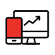

선택적 복리후생
자기계발 및 문화 생활을 위해 현금성 복지
포인트를 年 180만원 지급합니다.

도서 지원
업무 역량 강화부터 자기 개발을 위한 도서까지
직원들에 성장을 위한 도서를 지원 합니다.

플레이디 아카데미
‘나’와 ‘회사’가 함께 성장하는 문화를 만들어요!
플레이디 아카데미 운영을 통해 다양한 업무
스킬을 습득 할 수 있으며, 구성원 모두가 항시
학습하고 변화할 수 있는 기회를 제공합니다.

편리한 위치
수인분당선 서현역 5번 출구에서 7분 거리,
주요 광역버스 이용 가능한 버스 정류장이 3분
거리에 위치합니다.

시차출퇴근제
하루 8시간을 근무하되, 출퇴근 시간을
선택할 수 있는 근무제를 운영합니다.
쾌적한 사무환경
‘2022년 전면 리모델링과 사무용 가구 교체를
통해 더욱 쾌적해진 사무환경을 경험할 수
있어요.
최신 업무장비
원활한 업무를 위해 개인 별 최신 컴퓨터 장비
제공하고 있으며, 필요한 사무용품을 상시
지원합니다.

외근/야근 택시비 지원
외근이 있을 경우 더 편리하게 이동할 수 있도록
택시를 지원해요. 야근이 있을 경우, 야근
택시비와 석식비도 지원합니다.

통신비 지원
kt 이용 시 매월 3만원(팀원 기준)에 통신비를
지원합니다.

PS Day
매월 1회, 자율적으로 2시간 30분 늦게
출근하거나 일찍 퇴근하는 PS(Punch Stress)
Day를 운영합니다.

리프레쉬 존
업무로 지친 몸을 케어 할 수 있는 최고급
안마의자 3대를 운영합니다.
여직원 휴게실
임산부와 여직원들의 컨디션 회복을 돕고자
여성 휴게 공간을 별도 운영합니다.
사내 동호회
건전한 취미 생활과 친목 도모를 위한 사내
동호회를 운영하며 정기 활동비를 지원합니다.

여가생활
kt 스포츠단 경기(개막전 등 이벤트성),
체임버홀 공연 무료 관람 등 다양한 문화생활을
지원합니다.

휴양 시설
kt 휴양시설 무료 이용 및 전국 주요 호텔,
콘도 등 할인을 제공합니다.

사내 카페
플레이디 직원 만을 위한 사내 카페에서
바리스타가 제조하는 음료와 간식으로
리프레쉬 할 수 있어요. 부담 없이 이용할 수
있도록, 매 월 충분히 이용 가능한 카페 포인트를 지급합니다.

멀티 자판기
다양한 캔음료와 스낵류를 저렴하게 이용
가능해요.
단체 상해보험
4대 보험 외, 직원들을 대상으로 단체
상해보험을 운영하여 다양한 형태의 의료비를
지원합니다.
건강 검진
건강을 위해 매년 정기 종합 건강 검진을 실시하
고 있어요. (가족/지인 할인 혜택 제공)

독감 무료 접종
매년 독감 예방 접종을 무료로 받을 수 있도록
지원합니다.

심리 상담 프로그램
업무적 고민 뿐만 아니라 개인적인 고민과
스트레스 관리에 대해 전문가에 도움을 받을
수 있어요. 국내 1위 업체에 1:1
심리상담센터를 지원합니다.

명절 복지
임직원들이 하루라도 더 빨리 편하게 가족들을
만날 수 있도록, 명절 전 연차 차감없이 1일
유급 휴가를 지원합니다.

경조사 지원
구성원들의 기쁨과 슬픔 모두 함께합니다.
임직원의 경조사 발생 시, 경조 화환 및
지원금과 유급 휴가를 지원합니다.
Refresh 제도
열심히 일한 당신에게 드리는 혜택!
3년 근속 시 마다, 5일의 리프레쉬 휴가와
휴가비를 제공합니다.